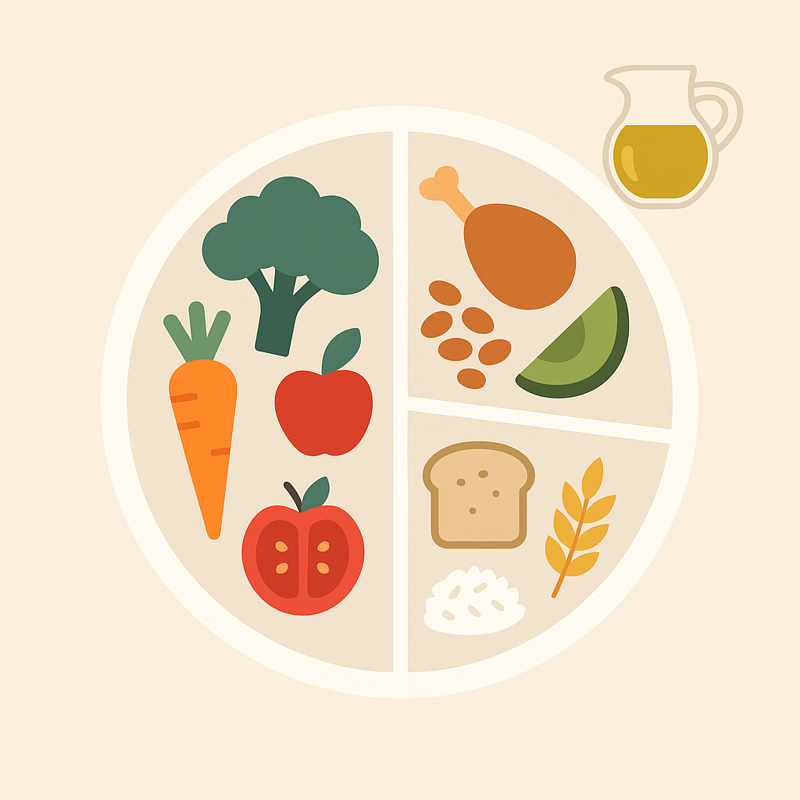
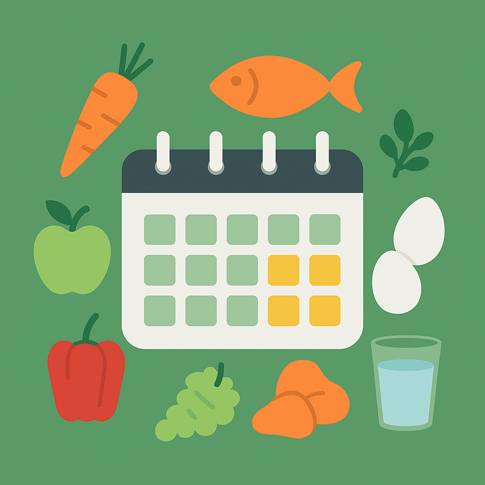
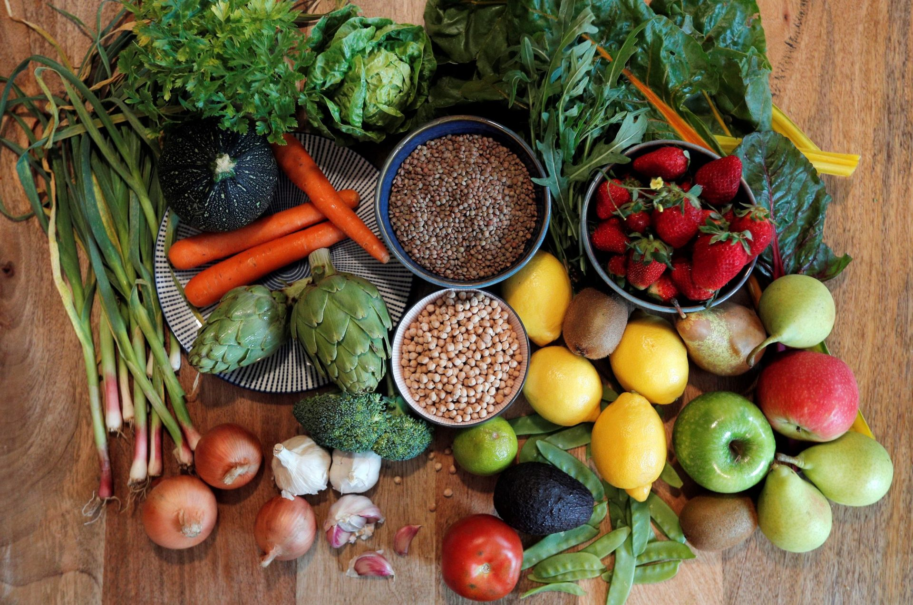

Grupos de Ingredientes
Y su importancia en nuestra alimentación

Equilibrio y Composición de una Alimentación Variada
Una dieta equilibrada aporta la energía y los nutrientes necesarios para mantener una buena salud. El Plato de Harvard es una guía visual sencilla para planificar nuestras comidas:
- 50% de frutas y verduras frescas: ricas en vitaminas, antioxidantes y fibra.
- 25% de proteínas: carnes magras, legumbres, tofu, huevos o pescado.
- 25% de cereales integrales: arroz, avena, pasta integral o pan de calidad.
- Grasas saludables: en pequeñas cantidades, preferiblemente de aceite de oliva, frutos secos o aguacate.

Distribución Semanal de Ingredientes
Planificar nuestras comidas ayuda a asegurar variedad y evitar carencias. Algunos consejos prácticos:
- Consumir al menos 5 raciones de frutas y verduras al día.
- Incluir legumbres 2-3 veces por semana.
- Variar las fuentes de proteína: pescado, pollo, huevos y alternativas vegetales.
- Reducir el consumo de azúcares añadidos, bebidas azucaradas y ultraprocesados.
- Beber suficiente agua (mínimo 1,5L/día).

La Importancia de la Variedad
Comer variado es fundamental para una nutrición completa. Cada grupo de alimentos aporta nutrientes únicos que deben combinarse en nuestra dieta:
- Verduras de distintos colores: aportan fitonutrientes variados.
- Frutas de temporada: mayor sabor y valor nutricional.
- Proteínas de origen vegetal: como legumbres, tofu y frutos secos.
- Evitar repetir platos similares toda la semana.
Una alimentación equilibrada no es restrictiva, sino flexible, sostenible y consciente.